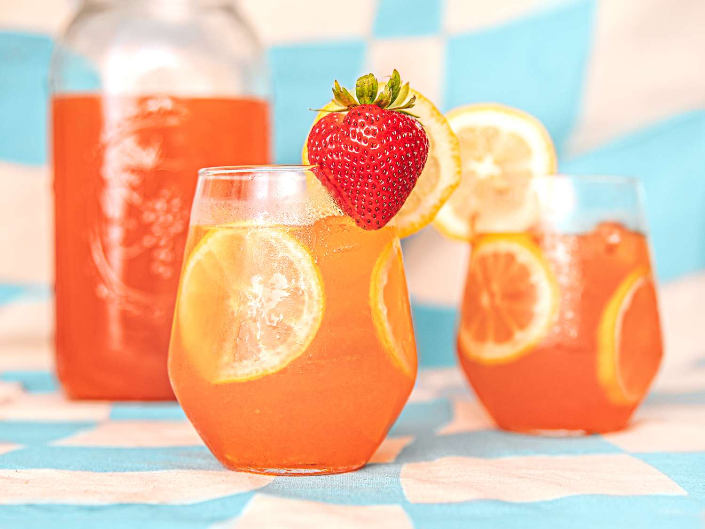

Sparkling Strawberry Lemonade Recipe

Description
Strawberry Lemonade is an essential touch for any summer picnic or lunch on the porch. An addition of soda water makes this recipe sparkle and fizz.
Use frozen strawberries for the full flavor release. Prep time is about 8 min
Ingredients
- lemon juice, about 1.5 cups
- water, about a quart
- frozen strawberries, about 1 pound
- 3 cups white sugar
Instructions
- mix sugar and lemon juice in a quart container until completely dissolved
- pour in all the strawberries
- fill to the brim with water
- let the lemonade sit for about 10 minutes and then serve